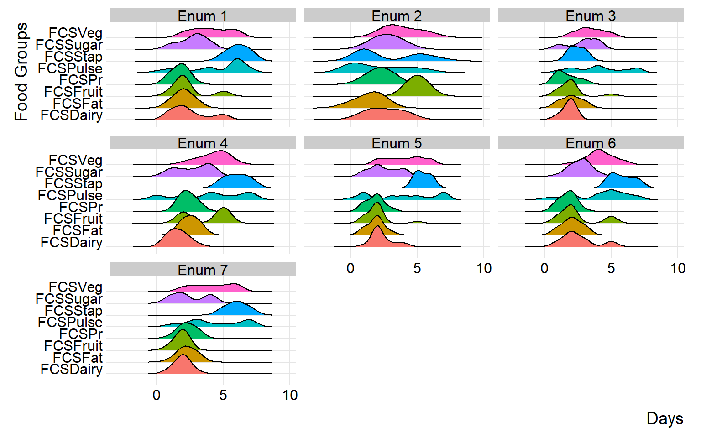
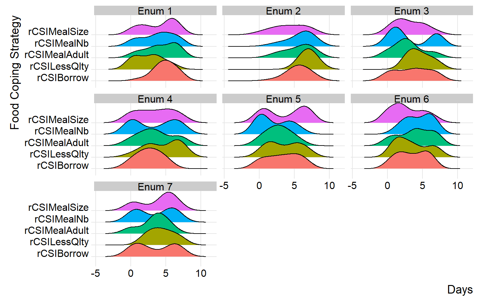
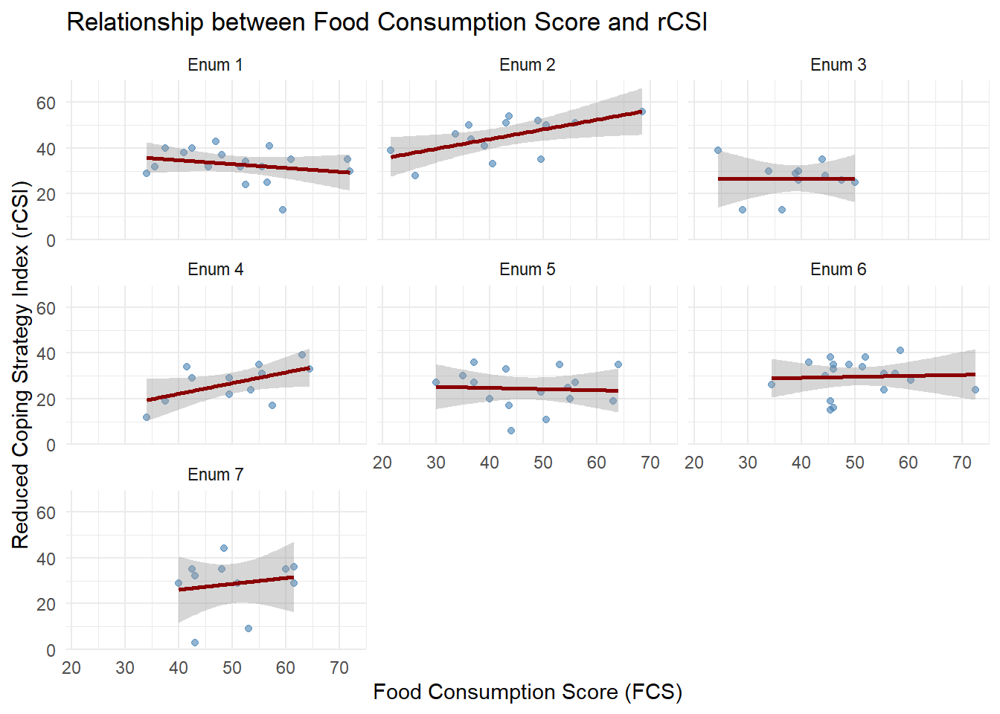

# required packages
library(tidyverse)
library(DT)
library(cleanR)
# load raw data
moda_data <- cleanR::survey_data %>% # converting HDDS variables to numeric
mutate(across(starts_with("HDDS"), as.numeric))Cleaning Food Security Indicators
R programming
Data Cleaning
This guide is designed to assist food security analyst in cleaning food security and livelihood outcome indicators using the cleanR package. our goal is to streamline the data cleaning process by going beyond the standard checks and understand hidden data patterns and identify any anomalies that need to checked prior the analysis. WFP SurveyDesigner codebook format is used for the documentation.
Step 1: Load data
The first step is to prepare the data by downloading the raw version from the server 1. remember that the documentation is using WFP codebook therefore consider to adopt the codebook if you’re at the planning stage of your assessment. otherwise if you already have data and want to follow the guide try to reshape your data to match the codebook variable naming.
Step 2: Format data
Now we have prepared the raw data, so we’ll use the calculate_fsl_indicators function to compute the food security and livelihood outcome indicators. the function will take arguments of raw data, food consumption score (FSC), reduced coping strategies (rCSI), household hunger scale (HHS), household dietary diversity (HDDS) and the livelhood coping strategeis (LCS-FS) variables.
raw_data <- calculate_fsl_indicators(data = moda_data,
# FCS
FCSStap = "FCSStap",
FCSPulse = "FCSPulse",
FCSPr = "FCSPr",
FCSVeg = "FCSVeg",
FCSFruit = "FCSFruit",
FCSDairy = "FCSDairy",
FCSFat = "FCSFat",
FCSSugar = "FCSSugar",
cutoff = "Cat28",
# rCSI
rCSILessQlty = "rCSILessQlty",
rCSIBorrow = "rCSIBorrow",
rCSIMealSize = "rCSIMealSize",
rCSIMealAdult = "rCSIMealAdult",
rCSIMealNb = "rCSIMealNb",
# HHS
HHhSNoFood_FR = "HHhSNoFood_FR",
HHhSBedHung_FR = "HHhSBedHung_FR",
HHhSNotEat_FR = "HHhSNotEat_FR",
# HDDS
# HDDSStapCer = "HDDSStapCer",
# HDDSStapRoot = "HDDSStapRoot",
# HDDSVeg = "HDDSVeg",
# HDDSFruit = "HDDSFruit",
# HDDSPrMeat = "HDDSPrMeat",
# HDDSPrEgg = "HDDSPrEgg",
# HDDSPrFish = "HDDSPrFish",
# HDDSPulse = "HDDSPulse",
# HDDSDairy = "HDDSDairy",
# HDDSFat = "HDDSFat",
# HDDSSugar = "HDDSSugar",
# HDDSCond = "HDDSCond"
)
NotePlease Note
you’ll only need to provide the variables names of the indicators you want to you in your analysis and its not required to specify all variables at all times (for instance, if you have data for FCS and rCSI only provide the arguments of these two indicators only).
Step 3: Data Checks
Assuming at this stage that you already run the standard high frequency checks on the data like survey time taken, sample and quota verification and overall survey and operator productivity checks. in this section we’ll go beyond the general checks and perform in-dept data checks.
Lets first use the fsl_cleaning_log function to flag major inconsistency and anomalies in the data. the function will take data and uuid as input and then return cleaning log file with all issues found in the data. this function is now considering critical indicators validation measures.
fsl_clog <- fsl_cleaning_log(data = raw_data, uuid = "uuid")
DT::datatable(head(fsl_clog, 5), options = list(dom = 't'))key checks included in the fsl_cleaning_log function will go as below
| Check | Description | Threshold / Pattern | Purpose |
|---|---|---|---|
| Low staple consumption | Identifies households reporting very low consumption of staple foods such as cereals or oil. | Cereals or oil ≤ 2 days | Staple foods are usually consumed frequently, so very low values may indicate unusual responses or recording errors. |
| High meat/dairy with low staples | Flags households reporting frequent consumption of meat or dairy while staple consumption is low. | Meat or dairy ≥ 6 days and cereals ≤ 4 days | This pattern is uncommon in most contexts and may suggest inconsistencies in the food consumption module. |
| Extreme food group consumption | Reviews food groups with unusually low or high reported consumption frequencies. | Very low (0–1 days) or very high (6–7 days) consumption | Helps identify irregular reporting patterns that may influence the Food Consumption Score. |
| High animal-source foods with high coping | Flags households reporting frequent meat or dairy consumption while also reporting high coping strategies. | Meat or dairy ≥ 6 days and high rCSI | These patterns may be inconsistent since high animal-source food consumption usually reflects better food access. |
| Repeated response patterns | Detects repeated or structured response patterns across food groups. | Examples: 7,7,7,7 or alternating values such as 2,1,2,1 | These patterns may indicate enumerator shortcuts or incorrect data entry during interviews. |
Step 4: Using Visualizations
By incorporating ridge charts into your analysis, you can easily identify patterns and variations in FCS and rCSI across different clusters or operators.
(plot_ridge_distribution(raw_data, numeric_cols = c("FCSStap", "FCSPulse", "FCSPr", "FCSVeg", "FCSFruit", "FCSDairy", "FCSFat", "FCSSugar"),
name_groups = "Food Groups", name_units = "Days", grouping = "EnumName"))
above chart will show the frequency distribution of food groups reported by operator. this visual will help us to identify any anomalies made by the operators. e.g if one operator reports major zero consumption of oil/cereal or sweets it could make alert that there is something need to check from that operators records and debrief them.
(plot_ridge_distribution(raw_data, numeric_cols = c("rCSILessQlty", "rCSIBorrow", "rCSIMealSize", "rCSIMealAdult", "rCSIMealNb"),
name_groups = "Food Coping Strategy", name_units = "Days", grouping = "EnumName"))
Frequency of reduced coping strategies reported by operator can be found below. similarly this visual will help us to detect if there is inconsistency or anomalies at the operator level.
Step 5: Statistical Checks
As food consumption improves, households tend to use fewer negative coping strategies. This means there is a negative correlation between food consumption and coping strategies. The analysis below shows this correlation overall, and also breaks it down by operator.
Since both food consumption and coping strategies are measured over the same recall period, households that eat a variety of food groups are less likely to skip meals, reduce portion sizes, or borrow food. Based on this relationship, we use the correlation coefficient to identify operators where this trend is weaker or stronger.
correlation <- cor(raw_data$FCS, raw_data$rCSI, use = "complete.obs", method = "pearson")
ggplot(raw_data, aes(x = FCS, y = rCSI)) +
geom_point(alpha = 0.6, color = "steelblue") +
geom_smooth(method = "lm", se = TRUE, color = "darkred") +
labs(
title = "Relationship between Food Consumption Score and rCSI",
x = "Food Consumption Score (FCS)",
y = "Reduced Coping Strategy Index (rCSI)"
) +
theme_minimal() + facet_wrap(~ EnumName)
#> `geom_smooth()` using formula = 'y ~ x'
NotePlease Note
Now that we have explored the data patterns and have some questions, lets see how the data alings with the seasonal calender. for instance Milk availability is hight during the rainy seasons (in the context of Somalia - April - June and October - December). so during these period we should also anticipate higher consumption of dairy and dairy products. so we need to see how our data is aligning with the seasonal calendar and try to understand deeper for any variances spotted.

Footnotes
https://moda.wfp.org/↩︎